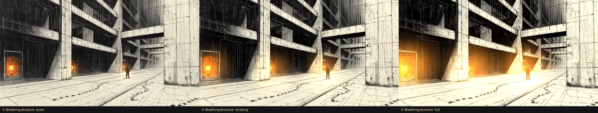
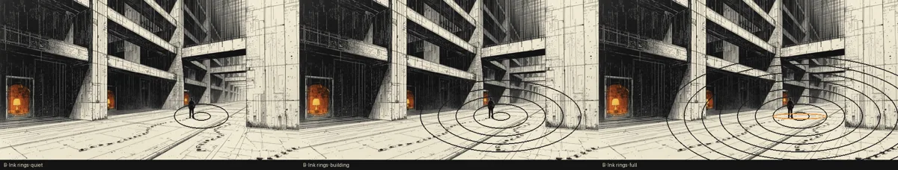

How the Bone & Ember drawings move with the music. Each strip shows one plate quiet, building and full.
Connecting to shared choices…
Your selection is shared with the agents after saving. You can also just reply on Telegram with a letter.
Option A
Breathing structure
Description. The whole drawing breathes with the sub-bass: a slow push-in and deeper ink contrast on the low end, and the ember lamps bloom with the voice and synths. Subtle in quiet sections, overwhelming at full. Closest to 'the building is alive'.

Option B
Ink rings
Description. On every drum hit, ink rings ripple outward through the concrete from the keeper (or his lamp), like a hand pressed against the wall. More rings as the song builds; at full, an ember ring at the centre. Graphic, readable, very on-beat.

Option C
Lamplight
Description. The world is dark except where the keeper's lamp reaches; the circle of light grows with loudness and the drawing is revealed in it. Quiet sections are almost black, the full sections show the whole hall. Most cinematic, fits the night round.